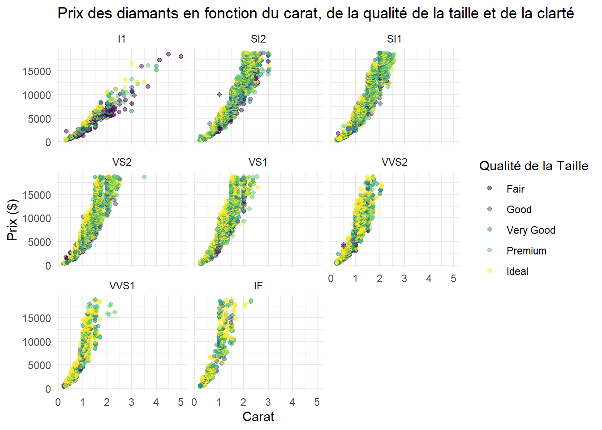
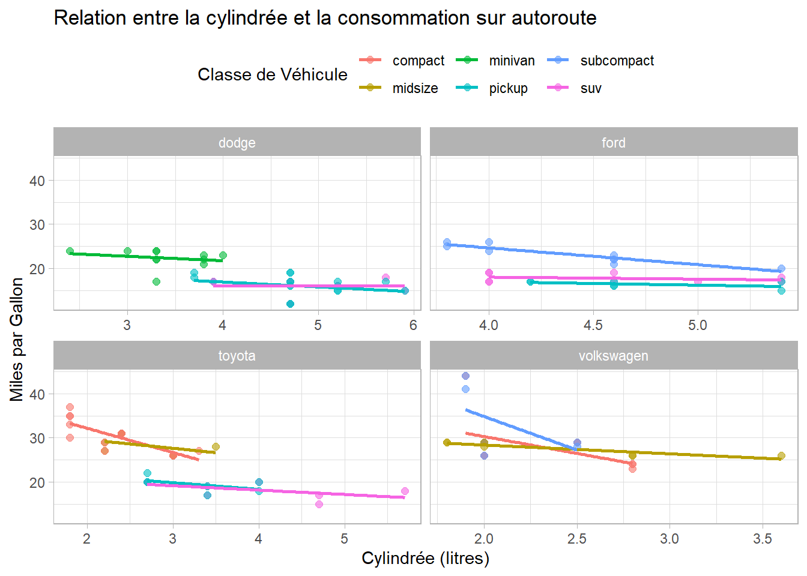
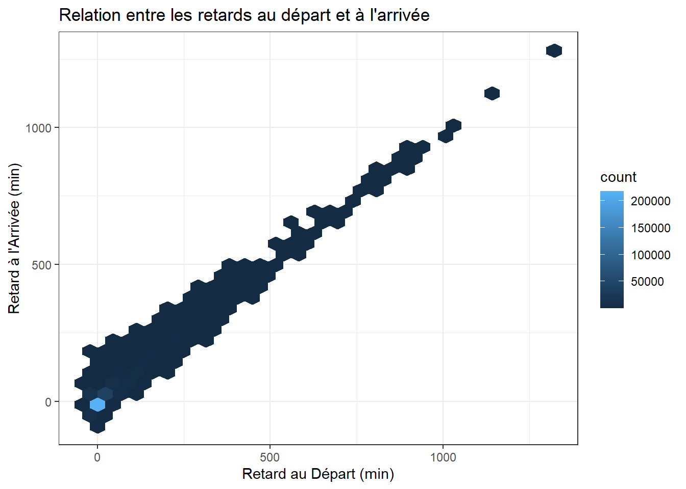
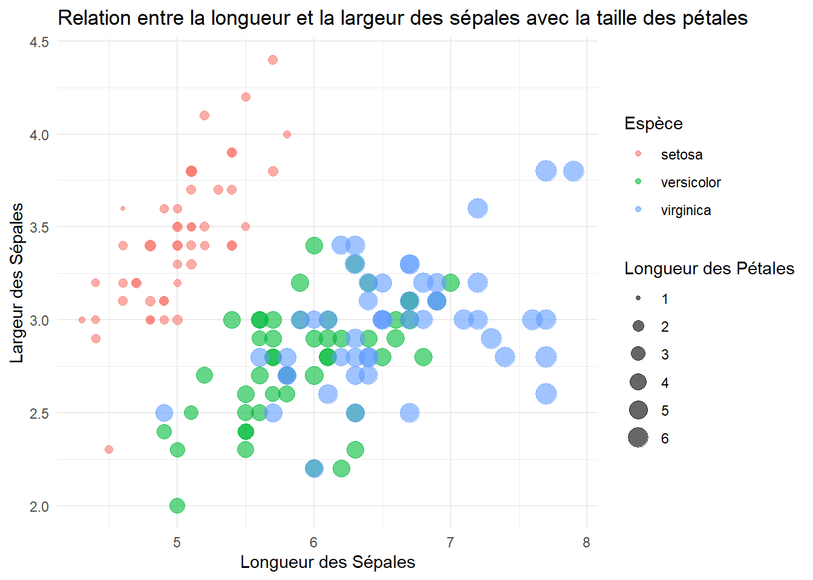
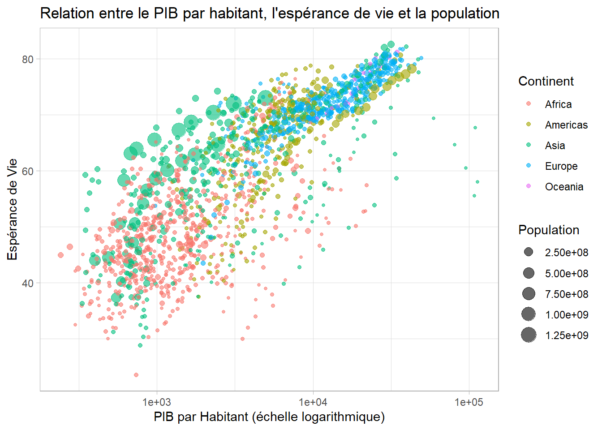
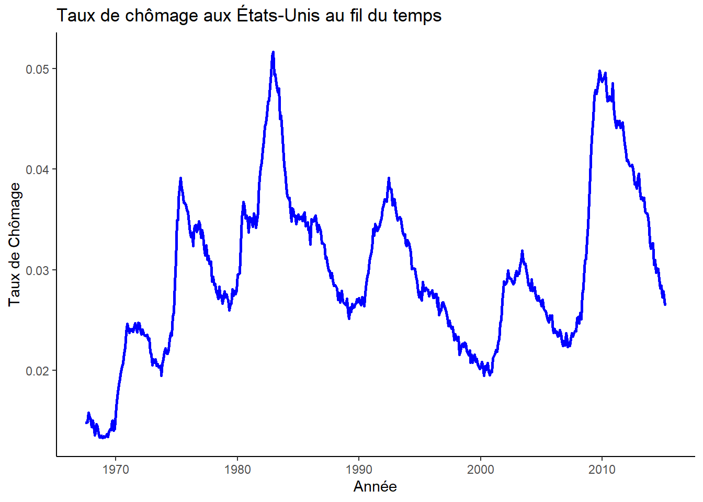
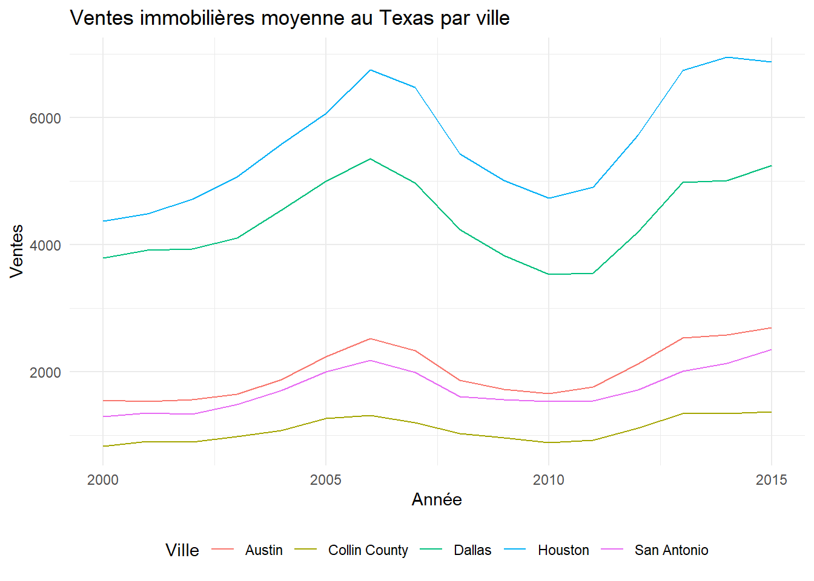
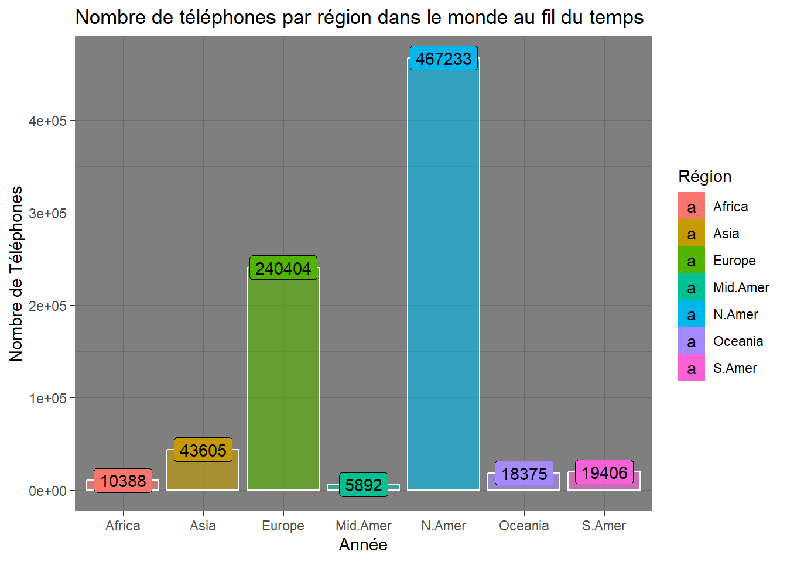
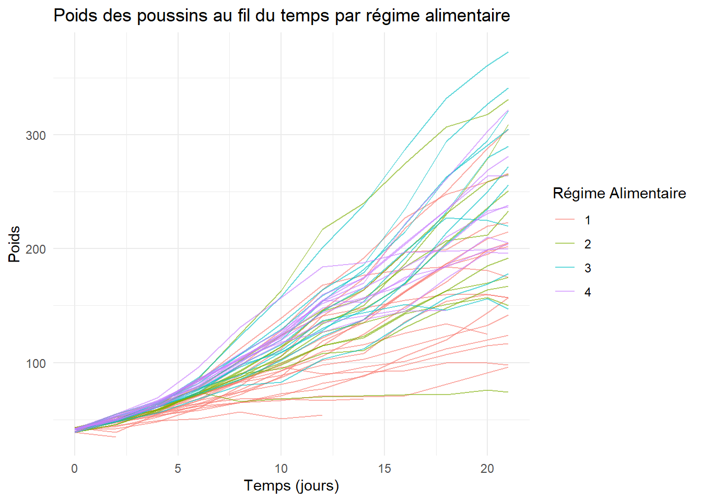
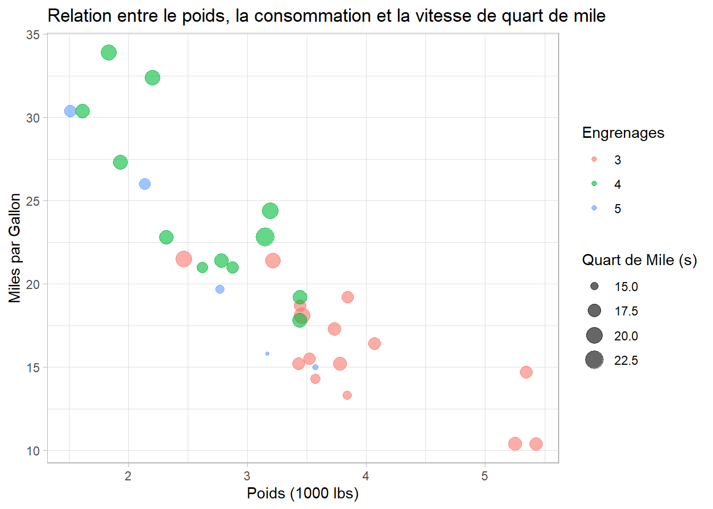

Reproduisez ce graphique
Reproduisez les graphiques sur cette page
Chargez la librairie tidyverse
Pour tout autre package autre que tidyverse, assurez vous de les installer avant d’utiliser la librairie. Ex. install.packages(gapminder)
Graphique 1: Diamonds (“diamonds” dataset)
Données: data(diamonds)
Variables utilisées:
carat: Carat
price: Prix en dollar
cut: Qualité de la taille
clarity: I1, SI2, SI1, VS1, VS2, etc.
Graphique 2: Miles par Gallon (“mpg” dataset)
Données: data(mpg)
Variables:
displ: Cylindré en litre
hwy: Miles par Galon
class: Classe de véhicule
manufacturer: dodge, ford, toyota, volkswagen, etc.

Graphique 3: Vols (flights dataset)
Données: library(nycflights13) et data(flights)
Variables:
dep_delay: Retard au départ en minutes
arr_delay: Retard à l’arrivée en minutes

Graphique 4: Iris
Données: iris data(iris)
Variables:
Sepal.Length: Longueur du sépale
Sepal.Width: Largeur du sépale
Species: Espèce de la fleure
Petal.Length: Longueur de la pétale

Graphique 5: Gapminder (nécessite le package gapminder)
Données: library(gapminder) et data(gapminder)
Variables:
gdpPercap: PIB par habitant
lifeExp: Espérance de vie
pop: Taille de la population
continent: Continent

Graphique 6: Économie
Données: data(economics)
Variables:
date: Date
unemploy: Taux de chômage
pop: Taille de la population

Graphique 7: txhousing (nécessite le package ggplot2movies)
Données: data(txhousing)
variables:
year: Années
sales: Ventes immobilières au Texas
city: Villes
Note: Il est nécessaire de faire la moyenne des vente par an.

Graphique 8: Worldphones (du package datasets)
Données: library(datasets) et data(WorldPhones) et as_tibble(WorldPhones)
Variables:
region: Régions
n_phones: Nombre de téléphones

Graphique 9: ChickWeight (du package datasets)
Données: library(datasets) et data(ChickWeight)
Variables:
Time: Temps en jour
weight: Poids
Chick:
Diet: Régime alimentaire

Graphique 10: mtcars
Données: data(mtcars)
Variables:
wt: Poids du véhicule
mpg: Miles par Gallon
gear: Engrenage
qsec: Quart de Mile en seconde
